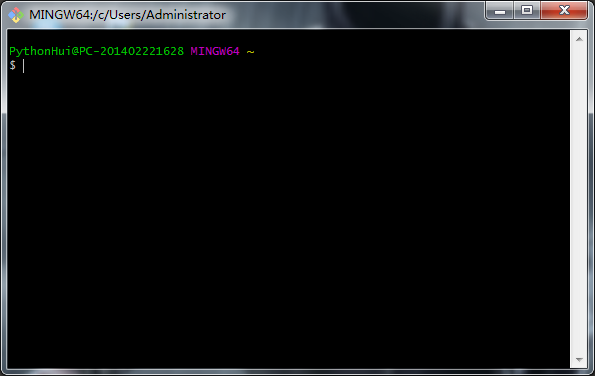

GIT （分布式版本控制系统）
简介
Git(读音为/gɪt/。)是一个开源的分布式版本控制系统，可以有效、高速地处理从很小到非常大的项目版本管理。
Git 是 Linus Torvalds 为了帮助管理 Linux 内核开发而开发的一个开放源码的版本控制软件。
Git与SVN的区别
GIT不仅仅是个版本控制系统，它也是个内容管理系统(CMS),工作管理系统等。
如果你是一个具有使用SVN背景的人，你需要做一定的思想转换，来适应GIT提供的一些概念和特征。
Git 与 SVN 区别点：
- GIT是分布式的，SVN不是：这是GIT和其它非分布式的版本控制系统，例如SVN，CVS等，最核心的区别。
- GIT把内容按元数据方式存储，而SVN是按文件：所有的资源控制系统都是把文件的元信息隐藏在一个类似.svn,.cvs等的文件夹里。
- GIT分支和SVN的分支不同：分支在SVN中一点不特别，就是版本库中的另外的一个目录。
- GIT没有一个全局的版本号，而SVN有：目前为止这是跟SVN相比GIT缺少的最大的一个特征。
- GIT的内容完整性要优于SVN：GIT的内容存储使用的是SHA-1哈希算法。这能确保代码内容的完整性，确保在遇到磁盘故障和网络问题时降低对版本库的破坏。
安装Git
最早Git是在Linux上开发的，很长一段时间内，Git也只能在Linux和Unix系统上跑。不过，慢慢地有人把它移植到了Windows上。现在，Git可以在Linux、Unix、Mac和Windows这几大平台上正常运行了。
Git 各平台安装包下载地址为：http://git-scm.com/downloads
在Linux平台安装Git
Git 的工作需要调用 curl，zlib，openssl，expat，libiconv 等库的代码，所以需要先安装这些依赖工具。
在有 yum 的系统上（比如 Fedora）或者有 apt-get 的系统上（比如 Debian 体系），可以用下面的命令安装：
各 Linux 系统可以使用其安装包管理工具（apt-get、yum 等）进行安装：
Debian/Ubuntu
Debian/Ubuntu Git 安装命令为：1
2
3
4
5
6
7 apt-get install libcurl4-gnutls-dev libexpat1-dev gettext \
libz-dev libssl-dev
apt-get install git
git --version
git version 1.8.1.2
Centos/RedHat
如果你使用的系统是 Centos/RedHat 安装命令为：1
2
3
4
5
6
7 yum install curl-devel expat-devel gettext-devel \
openssl-devel zlib-devel
yum -y install git-core
git --version
git version 1.7.1
在Mac OS X上安装Git
如果你正在使用Mac做开发，有两种安装Git的方法。
一是安装homebrew，然后通过homebrew安装Git，具体方法请参考homebrew的文档：http://brew.sh/ 。
第二种方法更简单，也是推荐的方法，就是直接从AppStore安装Xcode，Xcode集成了Git，不过默认没有安装，你需要运行Xcode，选择菜单“Xcode”->“Preferences”，在弹出窗口中找到“Downloads”，选择“Command Line Tools”，点“Install”就可以完成安装了。
在Windows上安装Git
在Windows上使用Git，可以从Git官网直接下载安装程序，（网速慢的同学请移步国内镜像），然后按默认选项安装即可。
安装完成后，在开始菜单里找到“Git”->“Git Bash”，蹦出一个类似命令行窗口的东西，就说明Git安装成功！

Git配置
Git 提供了一个叫做 git config 的工具，专门用来配置或读取相应的工作环境变量。
这些环境变量，决定了 Git 在各个环节的具体工作方式和行为。这些变量可以存放在以下三个不同的地方：
- /etc/gitconfig 文件：系统中对所有用户都普遍适用的配置。若使用 git config 时用 –system 选项，读写的就是这个文件。
- ~/.gitconfig 文件：用户目录下的配置文件只适用于该用户。若使用 git config 时用 –global 选项，读写的就是这个文件。
- 当前项目的 Git 目录中的配置文件（也就是工作目录中的 .git/config 文件）：这里的配置仅仅针对当前项目有效。每一个级别的配置都会覆盖上层的相同配置，所以 .git/config 里的配置会覆盖 /etc/gitconfig 中的同名变量。
在 Windows 系统上，Git 会找寻用户主目录下的 .gitconfig 文件。主目录即 $HOME 变量指定的目录，一般都是 C:\Documents and Settings\$USER。
此外，Git 还会尝试找寻 /etc/gitconfig 文件，只不过看当初 Git 装在什么目录，就以此作为根目录来定位。
用户信息
配置个人的用户名称和电子邮件地址：1
2 git config --global user.name "Your Name"
git config --global user.email "email@example.com"
因为Git是分布式版本控制系统，所以，每个机器都必须自报家门：你的名字和Email地址。你也许会担心，如果有人故意冒充别人怎么办？这个不必担心，首先我们相信大家都是善良无知的群众，其次，真的有冒充的也是有办法可查的。
如果用了 –global 选项，那么更改的配置文件就是位于你用户主目录下的那个，以后你所有的项目都会默认使用这里配置的用户信息。
如果要在某个特定的项目中使用其他名字或者电邮，只要去掉 –global 选项重新配置即可，新的设定保存在当前项目的 .git/config 文件里。
注意: 用了这个参数，表示你这台机器上所有的Git仓库都会使用这个配置，当然也可以对某个仓库指定不同的用户名和Email地址。
查看配置信息
要检查已有的配置信息，可以使用 git config –list 命令：1
2
3
4 git config --list
credential.helper=manager
user.name=ProgramerHui
user.email=1712817197@qq.com